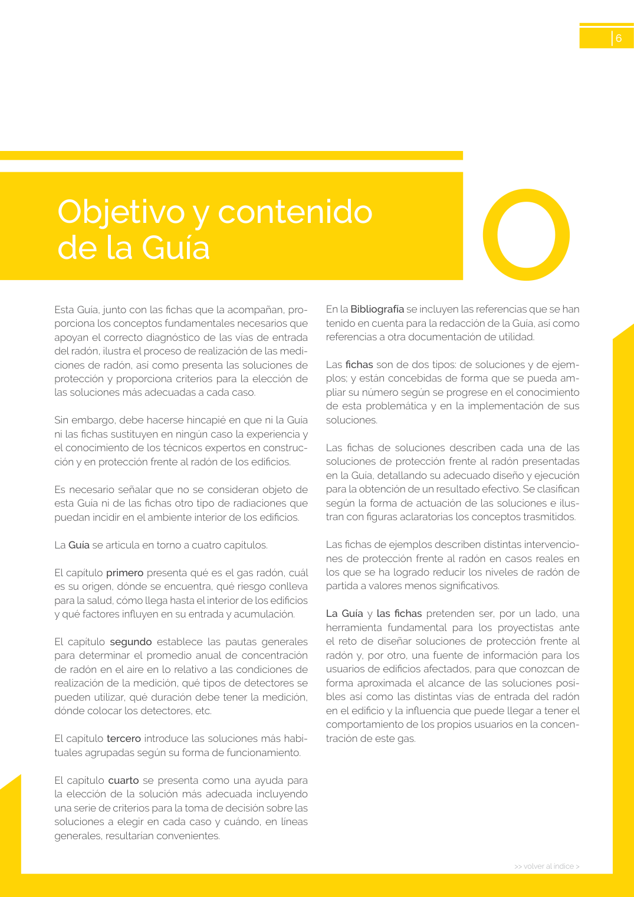

GUIA · Página 6 · versión sin-fecha
SHA256: 6765d0c34c51fbe193c3ed0c1378b710f98f086d16e2b68fc28ed36e143fdaea · página física 6 de 24 · métodos de encabezado
solo si están cotejados.
Formatos: Markdown · JSON de bloques · PDF p. 6 · imagen PNG
>> volver al índice > 6 Esta Guía, junto con las fichas que la acompañan, pro porciona los conceptos fundamentales necesarios que apoyan el correcto diagnóstico de las vías de entrada del radón, ilustra el proceso de realización de las medi ciones de radón, así como presenta las soluciones de protección y proporciona criterios para la elección de las soluciones más adecuadas a cada caso. Sin embargo, debe hacerse hincapié en que ni la Guía ni las fichas sustituyen en ningún caso la experiencia y el conocimiento de los técnicos expertos en construc ción y en protección frente al radón de los edificios. Es necesario señalar que no se consideran objeto de esta Guía ni de las fichas otro tipo de radiaciones que puedan incidir en el ambiente interior de los edificios. La Guía se articula en torno a cuatro capítulos. El capítulo primero presenta qué es el gas radón, cuál es su origen, dónde se encuentra, qué riesgo conlleva para la salud, cómo llega hasta el interior de los edificios y qué factores influyen en su entrada y acumulación. El capítulo segundo establece las pautas generales para determinar el promedio anual de concentración de radón en el aire en lo relativo a las condiciones de realización de la medición, qué tipos de detectores se pueden utilizar, qué duración debe tener la medición, dónde colocar los detectores, etc. El capítulo tercero introduce las soluciones más habi tuales agrupadas según su forma de funcionamiento. El capítulo cuarto se presenta como una ayuda para la elección de la solución más adecuada incluyendo una serie de criterios para la toma de decisión sobre las soluciones a elegir en cada caso y cuándo, en líneas generales, resultarían convenientes. En la Bibliografía se incluyen las referencias que se han tenido en cuenta para la redacción de la Guía, así como referencias a otra documentación de utilidad. Las fichas son de dos tipos: de soluciones y de ejem plos; y están concebidas de forma que se pueda am pliar su número según se progrese en el conocimiento de esta problemática y en la implementación de sus soluciones. Las fichas de soluciones describen cada una de las soluciones de protección frente al radón presentadas en la Guía, detallando su adecuado diseño y ejecución para la obtención de un resultado efectivo. Se clasifican según la forma de actuación de las soluciones e ilus tran con figuras aclaratorias los conceptos trasmitidos. Las fichas de ejemplos describen distintas intervencio nes de protección frente al radón en casos reales en los que se ha logrado reducir los niveles de radón de partida a valores menos significativos. La Guía y las fichas pretenden ser, por un lado, una herramienta fundamental para los proyectistas ante el reto de diseñar soluciones de protección frente al radón y, por otro, una fuente de información para los usuarios de edificios afectados, para que conozcan de forma aproximada el alcance de las soluciones posi bles así como las distintas vías de entrada del radón en el edificio y la influencia que puede llegar a tener el comportamiento de los propios usuarios en la concen tración de este gas. Objetivo y contenido de la Guía O
